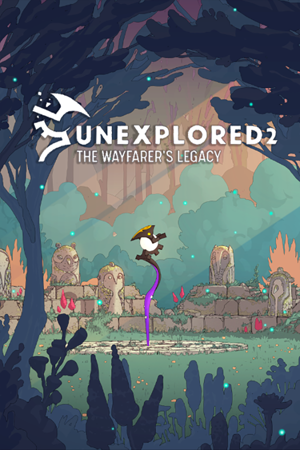

Unexplored 2: The Wayfarer's Legacy
Unexplored 2: The Wayfarer's Legacy
Details
|  | |
| Playtime | Not Played |
| Last Activity | Never |
| Added | 5/06/2025 3:25:10 |
| Modified | 7/06/2025 18:58:12 |
| Completion Status | Not Played |
| Library | Steam |
| Source | Steam |
| Platform | PC (Windows) |
| Release Date | |
| Community Score | |
| Critic Score | |
| User Score | |
| Genre | Adventure Indie RPG |
| Developer | |
| Publisher | |
| Feature | Achievements Cloud Saves Family Sharing Partial Controller Support Single-Player |
| Links | Community Hub Discussions Guides News Store Page PCGamingWiki Achievements |
| Tag | Adventure Atmospheric Colorful CRPG Dungeon Crawler Exploration Fantasy Perma Death Procedural Generation Roguelike Roguelite RPG Sequel Simulation Singleplayer Soundtrack Strategy Strategy RPG Stylized Top-Down |
Description
RPG? Adventure? Strategy? Unexplored is a genre-bending adventure. A procedurally generated open-world RPG where you will explore worlds beautiful and strange. Fantasy fans will find it subtly familiar yet entirely new - a wild world of elemental spirits, bright colors, and layered history of politics, magic, and legends.
With its unique blend of challenging, strategic, and slow-paced gameplay, the emphasis here is not on combat, but on the path you carve through your actions and decisions. As you delve into the richly woven narrative and master the intricacies of the game, you'll be treated to an award-winning soundtrack and an impressive visual style, both designed to enhance your gaming experience.
And the journey doesn't stop there – Unexplored 2 continues to grow and evolve, thanks to our dedicated team's regular updates. This ongoing development is our commitment to refine, expand, and perfect your adventure.

A Procedural RPG in a Boundless World
Unexplored 2 offers a vast, rich fantasy world that unravels over several journeys. Our game breaks away from traditional RPG norms, eliminating grind, XP, or gold, and instead, focusing on your choices and their far-reaching consequences.
From the safety of Temple in Haven, you will select a wayfarer, a quest, and prepare for the journey ahead. Each journey will see you traversing varied landscapes, interacting with diverse peoples, encountering mystical creatures, and unearthing ancient ruins. Each discovery brings you closer to the ultimate goal of taking the Staff of Yendor to the Prime Elemental Forge in the First Valley and to destroy it once and for all.
A World Finite Yet Infinite
In Unexplored 2, life and death have profound implications. Each wayfarer that sets out from Haven might not return. You will have to manage your roster of wayfarers carefully. Choose the quests that you think are achievable with your current wayfarer’s skills and resources. While traveling keep an eye out for new characters that might be recruited to join your cause.
Should you die, rest assured that there is always a new wayfarer ready to bear the burden. However, only try the final mission to destroy the Staff of Yendor when you think you are fully prepared to face the dangers of that quest. For if you fail then, that world will be lost. Forever.

Key Features
With its unique blend of challenging, strategic, and slow-paced gameplay, the emphasis here is not on combat, but on the path you carve through your actions and decisions. As you delve into the richly woven narrative and master the intricacies of the game, you'll be treated to an award-winning soundtrack and an impressive visual style, both designed to enhance your gaming experience.
And the journey doesn't stop there – Unexplored 2 continues to grow and evolve, thanks to our dedicated team's regular updates. This ongoing development is our commitment to refine, expand, and perfect your adventure.
A Procedural RPG in a Boundless World
Unexplored 2 offers a vast, rich fantasy world that unravels over several journeys. Our game breaks away from traditional RPG norms, eliminating grind, XP, or gold, and instead, focusing on your choices and their far-reaching consequences.
From the safety of Temple in Haven, you will select a wayfarer, a quest, and prepare for the journey ahead. Each journey will see you traversing varied landscapes, interacting with diverse peoples, encountering mystical creatures, and unearthing ancient ruins. Each discovery brings you closer to the ultimate goal of taking the Staff of Yendor to the Prime Elemental Forge in the First Valley and to destroy it once and for all.
A World Finite Yet Infinite
In Unexplored 2, life and death have profound implications. Each wayfarer that sets out from Haven might not return. You will have to manage your roster of wayfarers carefully. Choose the quests that you think are achievable with your current wayfarer’s skills and resources. While traveling keep an eye out for new characters that might be recruited to join your cause.
Should you die, rest assured that there is always a new wayfarer ready to bear the burden. However, only try the final mission to destroy the Staff of Yendor when you think you are fully prepared to face the dangers of that quest. For if you fail then, that world will be lost. Forever.
Key Features
- Dynamic Content Generation: Ludomotion's groundbreaking approach to content generation layers unique elements every time a new world comes into being.
- Generative Storytelling: Though the ultimate goal remains the same, each journey will have its unique set of locations, events, and encounters.
- Systemic Depth: Numerous game systems ensure fresh discoveries even after hundreds of hours of gameplay.
- Legacy System: No journey will leave the world or the wayfarer unchanged. Pass on gear, resources and even skills to new heroes in order to bolster their chance of success.
- Distinctive Presentation: Unexplored 2 surprises with its beautiful art style, a rarity among generative games. A versatile lighting system adapts to the day and weather, setting the perfect mood for your adventure.
- Adaptive Orchestral Soundtrack: Our award-winning original score reacts to your actions and decisions, wrapping your adventure in a cloak of immersive sound.